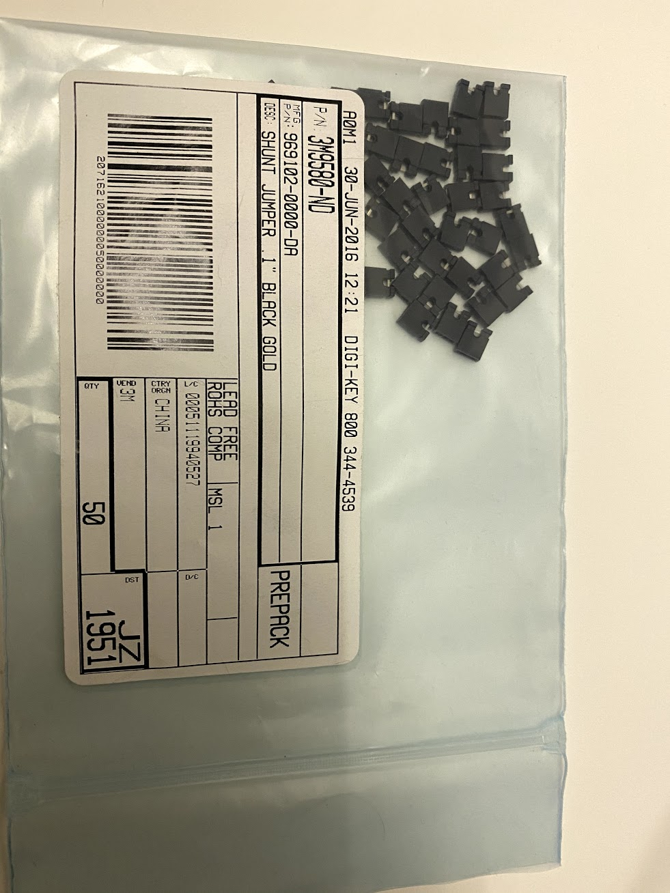
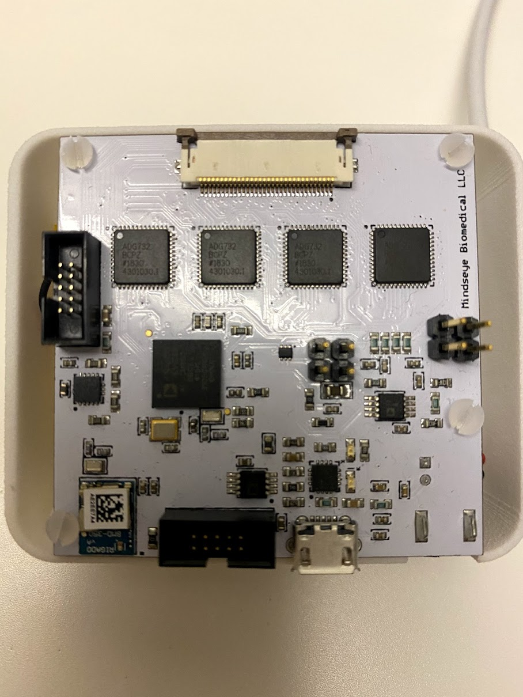
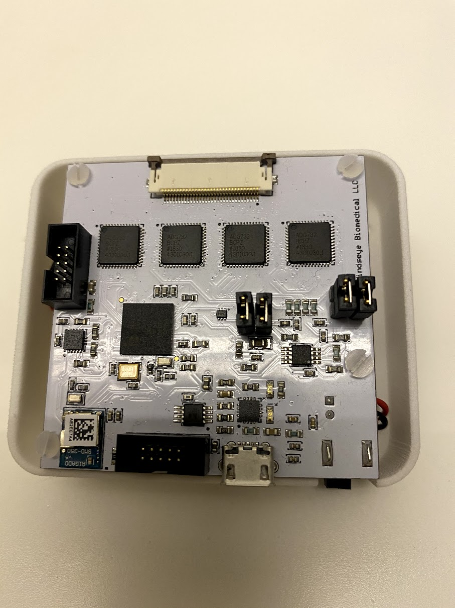

FAQ¶
Question 1:¶
How do I insert and remove the flex PCB cable?
Question 2:¶
I wish to run it with a battery - how do I do that?
The following battery will fit perfectly within the case, and should be connected to the white connecter. Link to battery here
Question 3:¶
I appreciate the IEC60601-1 compliance for biomedical applications, as it ensures safe use and small currents. However, I have a non-biological application where I’d like to remove the DC filters, how can I do it?
The IEC filters can be bypassed by adding jumpers. Below I show three pictures, one of example 2.54mm suitable jumpers from Digikey, a second picture of the board without jumpers, and a third picture of the board with jumpers correctly in place. Now, Spectra is operating without the IEC compliant filters enabling you to change the current, and also get the most accurate phase measurement(the capacitor in the IEC filter slightly alters the phase). Do remember that you accept all risk for using your Spectra.
  {kind=link}
{kind=link}
{kind=link}